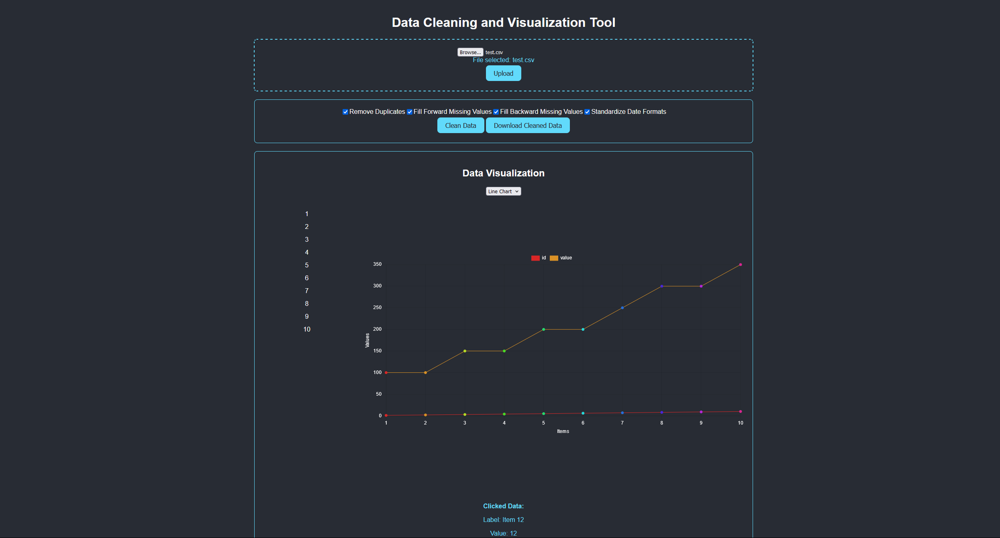
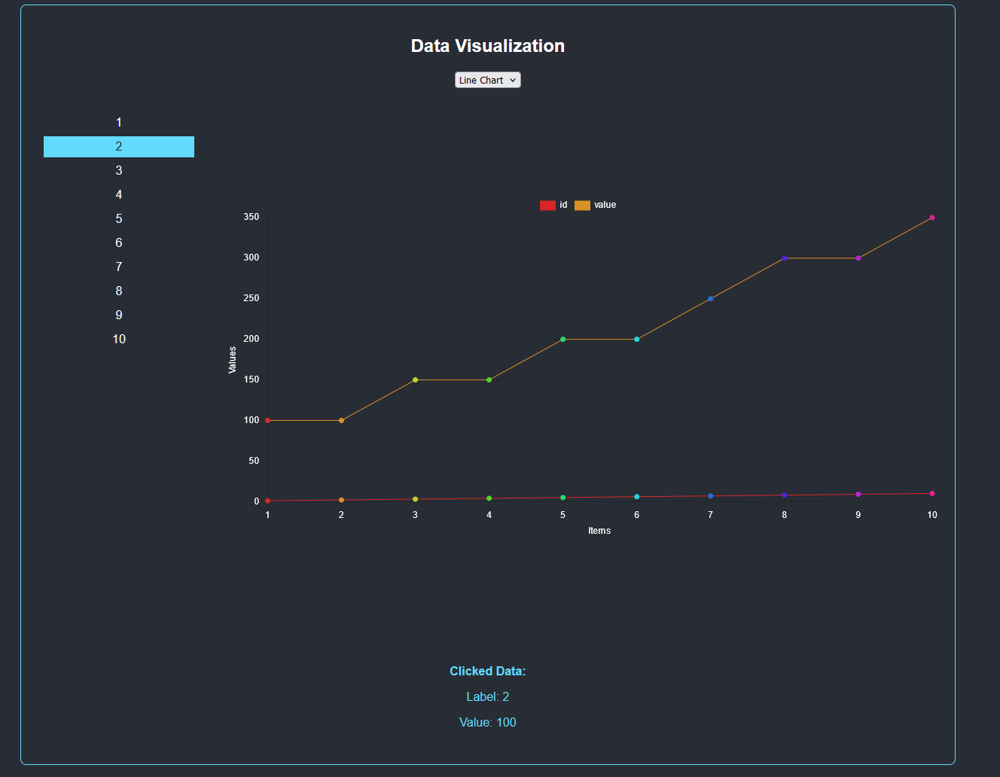
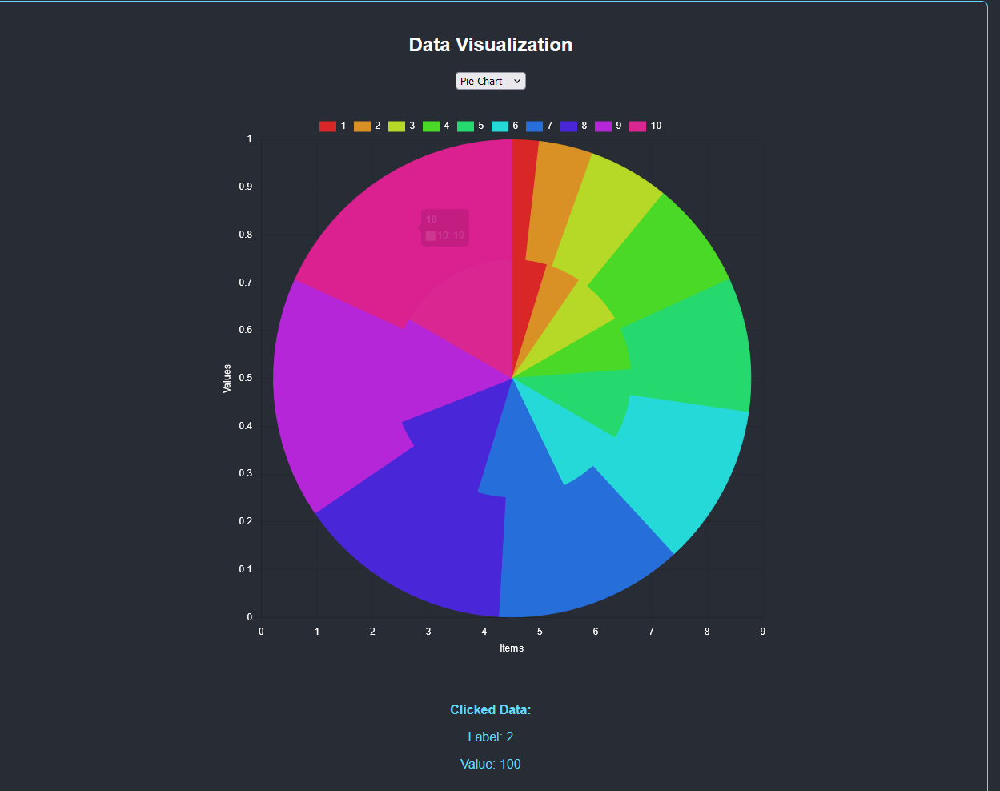

I'm Praneeth Boinpally, a Network Engineer with AI & Automation expertise, bridging the gap between enterprise network infrastructure and intelligent automation. With hands-on experience at Cisco working on Firepower security platforms and a strong foundation in AI development, I build solutions that make networks smarter, faster, and easier to manage.
In this portfolio, you'll discover:
Hands-on Cisco lab engineering reproducing real-world network issues for TAC across L1, L2, and L3 environments
Creator of Zenova AI — an intelligent AI assistant built and hosted on Hugging Face
AI-powered network automation tools that save engineers time and reduce manual effort on the job
Oct 2021 - Dec 2021
Python, OpenCVDescription: Developed a system to monitor and analyze eye movements to detect driver drowsiness.
Feb 2022 - May 2022
XGBoost, SKlearnDescription: Created a system to identify and analyze network intrusions using machine learning.
Jun 2022 - Aug 2022
Keras, TensorFlowDescription: Built a system to monitor online examinations through data analysis of video feeds.
Jan 2023 - May 2023
Java, SQL, AndroidDescription: Designed a server-side application and Android client for efficient data management.
Aug 2023 - Sep 2023
Embedded C, SensorsDescription: Implemented an intelligent alarm system to monitor and analyze laundry cycles.
Jan 2024 - Mar 2024
Python, Machine LearningDescription: Developed a system to recommend auto insurance premiums based on comprehensive data analysis.
Description: This application allows users to upload datasets, clean the data by removing duplicates or handling missing values, and visualize the cleaned data using various chart types. The backend is powered by Flask, and the frontend is developed using React.



M.S in Computer Science | Jan 2023 – May 2024
GPA: 3.67/4
Bachelor of Technology, Computer Science | Aug 2018 - July 2022
GPA: 7.47/10
Network Lab Engineer
Cisco Systems (via Experis) | North Carolina, USA | August 2025 – Present
Cisco
Microsoft
Issued: 2024
Cisco
Issued: 2024
Amazon Web Services
Issued: 2019
Databricks
Issued: 2025
Databricks
Issued: 2025